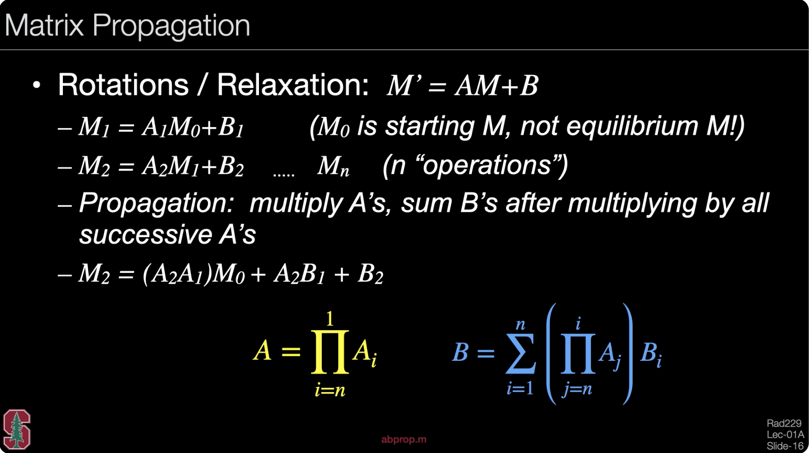

2. Bloch Simulation (Components)
In this section, you will learn the expressions of various components (i.e., relaxation, RF rotation, gradient rotation, etc.) as they apply to magnetization, and how to compute their effects.
All embedded code could be found in: ZN_branch modified based on MRSignalSeqs
Summarized list
- Relaxation: relax.m
- RF Rotation (B1 along positive x-axis): xrot.m
- RF Rotation (B1 along positive y-axis): yrot.m
- RF Rotation (flexible B1): throt.m
- Gradient Rotation: zrot.m
- Perfect Spoiler: set \(M_x\) and \(M_y\) as zero
- Propagation: abprop.m - Real & Complex form: mr2mc.m and mc2mr.m
2.1 Relaxation
refer to: relaxation bloch function
2.2 RF Rotation
Given the flip angle \(\alpha\) and phase \(\theta\) (the angle between B1 direction and positive x-axis) of the RF pulse
To note: the flip obeys the left-handed rule

Here, we expect the B1 field only applied on the xy-plane. For any imperfections (components on z direction), taking it as 'Gradient Rotation' (see below 2.3)
Three functions for RF rotation simulation:
- xrot: B1 along the positive x-axis (\(\theta = 0^o\)), for xrot(90), the M will be flipped to positive y-axis (left-handed rule) xrot function
- yrot: B1 along the positive y-axis (\(\theta = 90^o\)), for yrot(90), the M will be flipped to negative x-axis (left-handed rule) yrot function

-
throt: for B1 with flexible directions on xy-plane throt function
xrot and yrot are special cases of throt (\(\theta = 0^o\) and \(90^o\)), respectively
2.3 Gradient Rotation
There are three ways to cause the gradient rotation:
- Add gradient \(G\)
- B0 field inhomogeneity \(\Delta B_0\)
- B1 field imperfection (off-resonance) \(\Delta \omega = \omega_{RF} - \omega_0\)
To note: the phase difference caused by the gradient \(G\) is: \(\phi_G(r) = -\gamma \int^\tau_0 G(r,t)r dt\)
Especially, for the linear gradient: \(\phi_G(r) = -\gamma G* \tau * r\)
Therefore, the overall gradient rotation (phase) angle is: \(\theta = (\gamma G* r+\gamma \Delta B_0 + \Delta \omega)\tau\)
Actually, this phase difference is called the 'angle', since it is the angle between the actual rotating frequency to the rotating frame based on \(\omega_0 = \gamma B_0\), which means the new/actual rotating frame rotate faster/slower: \(\omega_{new} = \omega_0+\frac{\theta}{\tau}\)
 (see zrot function)
(see zrot function)
2.4 Perfect Spoiler
A perfect spoiler refers to a result that can be achieved through various methods (e.g., RF spoiling or gradient spoiling), all leading to the same outcome: complete elimination of transverse magnetization.
Gradient Spoiler: To achieve complete spoiling, the phase difference between different positions \(r\) must exceed \(2\pi\) (i.e., \(\phi(r) = \gamma G r \tau >> 2\pi\)), so that the transverse magnetization vectors \(M_{xy}(r)\) at different locations cancel each other out, resulting in a net transverse magnetization of zero.
RF Spoiler: This technique is commonly used in SPGR (T1-FLASH) sequences. It involves varying the phase of each excitation RF pulse in the GRE sequence (RF phase cycling) so that the transverse magnetization vector \(M_{xy}(r)\) within each TR (\(TR_n\)) accumulates to zero. To achieve effective spoiling, the phase difference between consecutive RF pulses is typically set to 117°, 137°, or 111.246°.
However, as mentioned, whatever which method has been applied, the simulation of the perfect spoiler is the same: to set the \(M_x\) and \(M_y\) all as 0.
M(1:2,:)=0; % Perfect spoiler
2.5 Propagation
When multiple components (e.g., gradient rotation, relaxation, etc.) are applied over time, their combined effect can be represented by a single computation matrix applied to \(M\) all at once. This process is referred to as propagation.
3x3 matrix propagation
With this settings:
- net magnetization: \(M=[M_x, M_y, M_z]\)
- A is a 3x3 matrix, which could represent the changes inducted by RF rotation, gradient rotation, T2 relaxation, and part of T1 relaxation
- B is a 1x3 matrix, which only included the changes caused by part of T1 relaxation
Then the principle of propagation is:

4x4 matrix propagation
To simplify the propagation, matrices A and B can be combined into a single 4×4 matrix, allowing the propagation to be performed with a single matrix multiplication.
 .
.
There's a mistake within this pic: the B matrix should be \(B_{1x3}\) instead of \(B_{3x3}\)
For Matlab compuatation, see abprop.m

Order of propagation
When different components are applied over time, those applied earlier are closer to \(M_0\) in the computation sequence.
However, the order of applying relaxation and gradient rotation matrices can be reversed without affecting the result, whereas RF rotation cannot be interchanged with any other computation matrix:
\(\text{xrot} \times \text{relaxation} \ne \text{relaxation} \times \text{xrot}\).
This leads to a tricky case: what happens when RF rotation, gradient rotation, and relaxation occur simultaneously? For example, during slice-selective excitation. (For details, see Section 3, Case D.)
2.6 Complex Representation
Sometimes, for easier representation of phase and magnitude, we turn real representation of magnetization into complex form:
- Real: \(M = [M_x, M_y, M_z]\)
- Complex: \(M = [M_{xy}, M_{xy}^*, M_z]\), in which \(M_{xy} = M_x + iM_y\)
Therefore, the translation between this real \(M_r\) and complex \(M_c\) form is (refer to mr2mc and mc2mr):